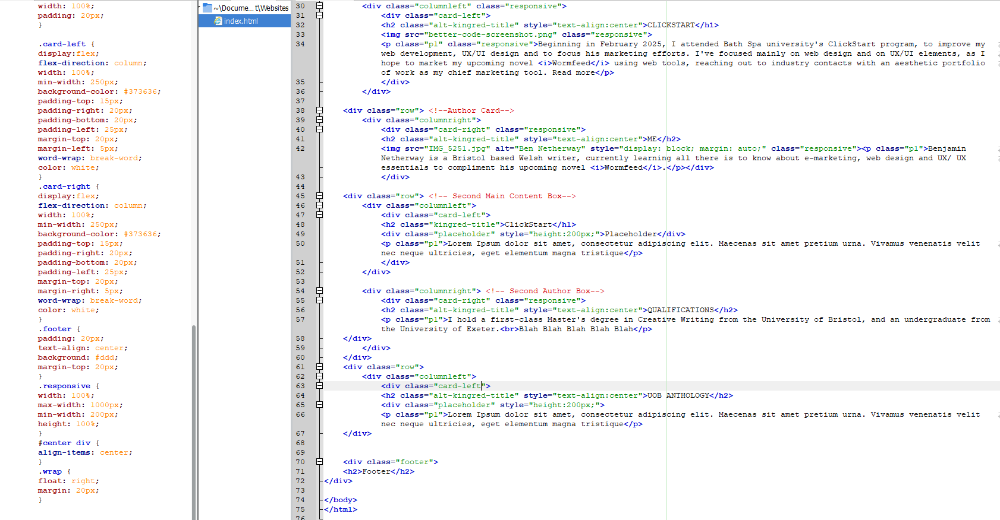
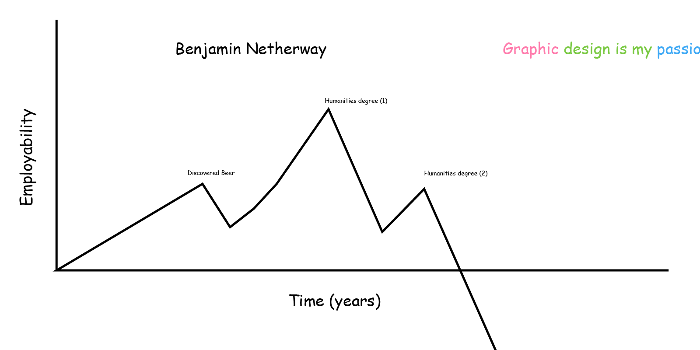
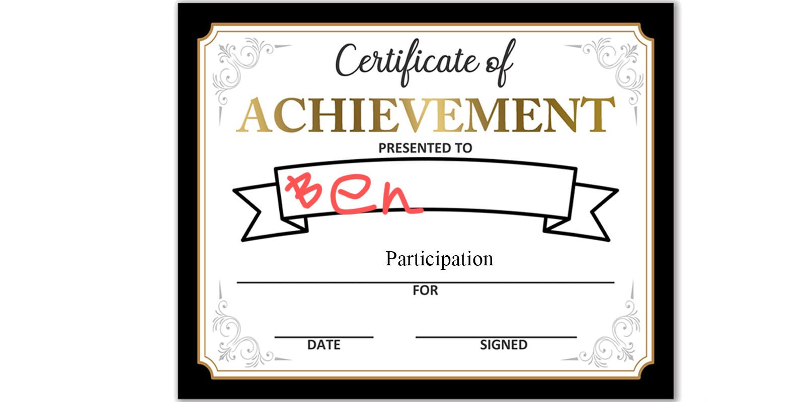

BENJAMIN NETHERWAY
CLICKSTART 
Beginning in February 2025, I attended Bath Spa university's ClickStart program, to improve my web development, UX/UI design and to focus his marketing efforts. I've focused mainly on web design and on UX/UI elements, as I hope to market my upcoming novel Wormfeed using web tools, reaching out to industry contacts with an aesthetic portfolio of work as my chief marketing tool. Read more
ANTHOLOGY
Following the end of my postgraduate degree, I joined a few of my cohort to organise, edit and produce an anthology of work from submissions of my classmates. We are expecting to release this in May 2025.
MASTER'S DEGREE 
After a long, hard year of turning up to lectures twice(!) a week, I submitted my Master's dissertation, focusing on how using 'unconventional' gender roles in 12,000 words of original writing caused tension within a 'conventional' piece of detective fiction, relating to my splicing of elements of bildungsroman into a conventionally hard-boiled and patriarchal genre.
ABOUT

Benjamin Netherway is a Bristol based Welsh writer, currently learning all there is to know about e-marketing, web design and UX/ UX essentials to compliment his upcoming novel Wormfeed.
In my free time I enjoy playing instruments, reading and drinking unhealthy quantities of beer. I've always been interested in technology, building computers since a boy and working in technical roles for educational institutions.
I am fascinated, if worried about the role of technology on our society; I enjoy writing about humanity's connection to the real, and how intangible sillicon valley projects interact with tactile, every-day working people.
QUALIFICATIONS
I hold a first-class Master's degree in Creative Writing from the University of Bristol, and a bachelor's degree in English Literature and Creative Writing from the University of Exeter.
I'm also trained on manual handling and working at height, so if you need a box shifting off a shelf and want to be legally clear, I'm your man.